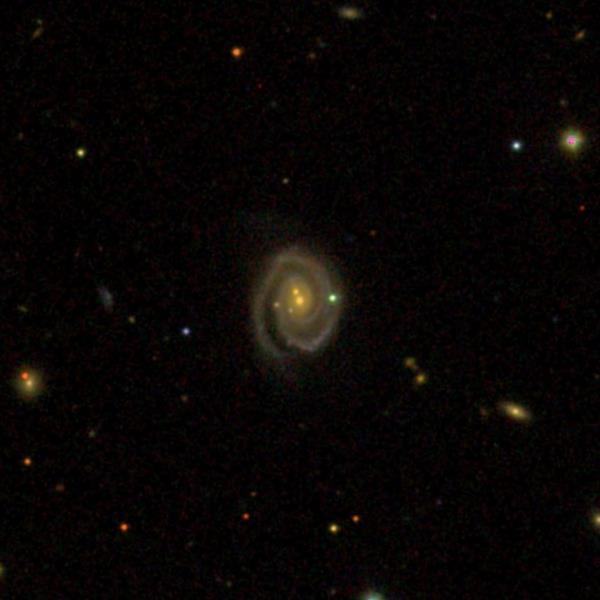
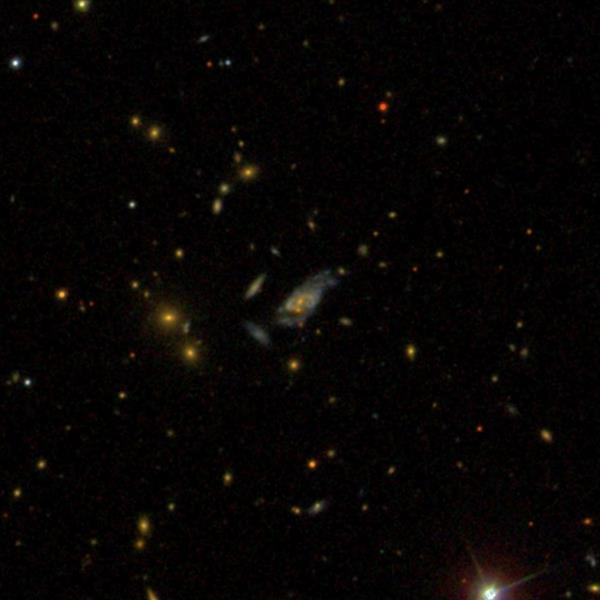

Superluminous Spiral Galaxies
- Name: CGCG 122-067
- RA: 09 44 53.6
- Dec: +22 53 06 (Leo)
- Type: Sbc
- Aliases: MCG +04-23-030 = PGC 27924 = OGC 1559
- Size: 0.7' x 0.5'
- Name: V
- Mag: 14.7, B
- Mag: 15.7
In 2016, a team of NED/IPAC (Caltech) astronomers led by Patrick Ogle announced the discovery of 53 super spirals -- massive, giant spiral galaxies that were optically as luminous as the brightest elliptical galaxies. These superluminous spirals were found by mining the NASA/IPAC Extragalactic Database. I recently wrote an article on observing distant (at least 1 billion l.y.) galaxies and quasars for the upcoming May issue of Sky & Tel but none of the objects I discussed in the article were spirals.
In the local universe (under 1 billion light years), the most massive galaxies are found at the center of rich galaxy clusters (cD type) such as the Coma Galaxy Cluster, and consist of bloated elliptical galaxies that have increased in mass and girth by cannibilizing their surrounding neighbors. A typical spiral in the local universe (such as the Milky Way) has a diameter of ~100,000 light years and may produce the equivalent of 1 solar mass of new stars per year.
But the NED group uncovered 53 superluminous spirals with diameters between 180,000 and 440,000 light years that are churning out stars at a furious rate of 5 to 65 solar masses per year. All of these objects have distances between 1 and 3.5 billion light years (redshifts between z = .089 and z = .300). So, here we have a survey of basically the biggest and baddest spirals within 3.5 billion light years!
Last weekend I visited Jimi Lowrey and brought along this list of super spirals to observe with his 48" in west Texas. The brightest and nearest of the 53 galaxies is CGCG 122-067 (or OGC 1559 for "Ogle Galaxy Catalogue"). This galaxy is located in northern Leo just 0.9° south of 3.0-magnitude Epsilon Leonis. With a redshift of z = .089, the light-travel time is 1.2 billion years -- more distant than the Corona Borealis galaxy cluster. Normally, a spiral this distant would be very difficult to see, but this one has a diameter of 265,000 light years and a star-forming rate of 13 solar masses/yr. This spiral should be just visible in an 18-inch scope.

My notes read, "at 488x -- fairly faint, small, round, ~20" diameter, very small bright core, stellar nucleus. A faint but easy mag 16.7 star is superimposed on the west edge. This galaxy actually looks like a spiral with a small core and nucleus!" On the SDSS image, it appears to be a merger with a double nucleus. We looked for this, but mistakenly assumed the superimposed star on the west side was the second nucleus. It would likely require higher power to resolve the twin nuclei.
Interestingly, 4 of the super spirals in the paper are late-stage major mergers – a possible clue to these monsters. In addition at least 10 of the super spirals seem to be located in groups or galaxy clusters, but most of them appear to be fairly isolated. So, how did they grow so massive?
While observing about 70 objects over two nights, we looked at a sample of 10 in the spring skies and were able to make successful observations of 7 of these. The most distant one we managed was SDSS J121644.34+122450.5 (OGC 1606). This galaxy has a diameter of 250,000 light years, a redshift z = .257 and a Vmag of 17.7. The redshift corresponds with a distance of just over 3 billion light years. Neither of us thought a spiral galaxy would be visible at this distance, so were quite pleased with the observation.
The largest Ogle spiral is 2MASX J16394598+4609058 with a whopping diameter of 437,000 light years. This giant appropriately lives in Hercules at a distance of 2.9 billion light years and has a V mag of ~17.2.
One of the more interesting spirals is PGC 56730 = KUG 1559+274 in Corona Borealis at 16 01 40.6 +27 18 16 i. This is apparently another spiral merger and it's the most prominent member (if you can call V ~16.4 prominent) at a distance of 2.0 billion light years.

As always,
"Give it a go and let us know!"